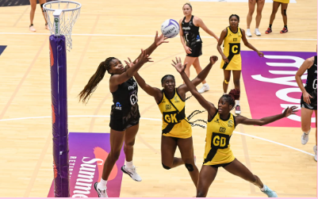

Netball Project
Netball is a ball sport played on a rectangular court by two teams of seven players. . The primary objective is to shoot a ball through the defender's goal ring, mounted 3.05 metres high to a goal post at each end of the court while preventing the opposing team from shooting through their own goal ring.
Learn more


Croissant project
A croissant is a buttery, flaky, viennoiserie pastry of Austrian origin, named for its historical crescent shape. Croissants and other viennoiserie are made of a layered yeast-leavened dough
See more